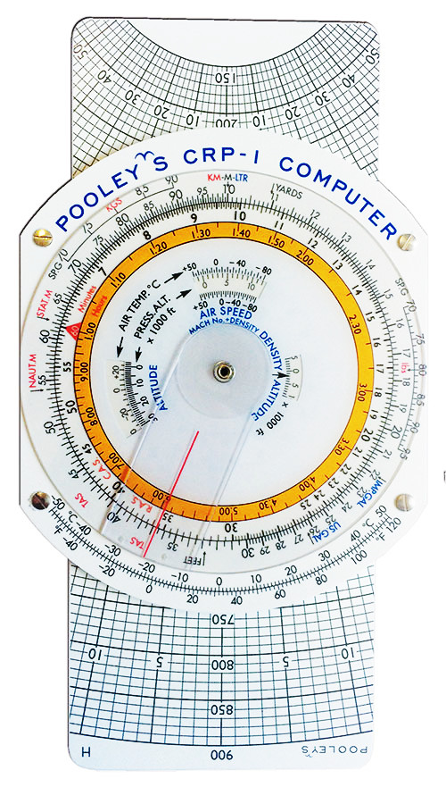
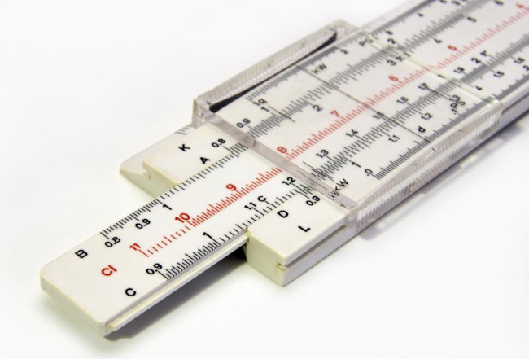
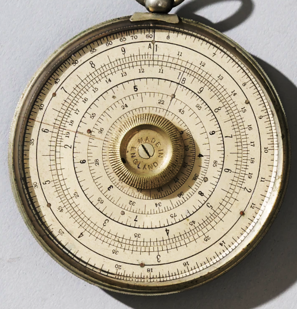

They don't make them like that any more: the slide rule
 I should say from the outset that, in fact, they do still
make them -- at least for specialist purposes.
When I was learning to fly,
about twenty years ago, I had to demonstrate my proficiency with the
Pooley's CRP-1 -- essentially a circular slide rule. Here is
what it looks like:
I should say from the outset that, in fact, they do still
make them -- at least for specialist purposes.
When I was learning to fly,
about twenty years ago, I had to demonstrate my proficiency with the
Pooley's CRP-1 -- essentially a circular slide rule. Here is
what it looks like:

The CRP-1 was, and still is, optimized for calculations relevant to aviation, like journey time and fuel consumption. These are essentially multiplication problems -- a kind of arithmetic at which the slide rule excels.
The CPR-1 is made from a kind of plasticized cardboard. This construction has the advantage that you can write on it with a chinagraph pencil, and clean it off later. It weighs almost nothing -- important in the kind of airplane where you have to skip lunch to get under the loading limit -- and, of course, requires no power apart from your finger muscles. The thought of using such a device, whilst diverting around a thunderstorm and negotiating with the air traffic controller, even now brings me out in a cold sweat; but at least it would be plausible. Maybe.
The slide rule was so integral to aviation that you could, and still can, buy watches that incorporate a rotating slide rule. The picture below shows the Breitling Navitimer -- a timepiece whose extraordinary beauty is rivalled only by its price. It's not mine, I'm sorry to say, as I still have both my kidneys.
For the professional engineer or scientist, specialist suppliers made slide rules of staggering complexity -- some with thirty or so different scales. If you're under fifty years of age, it's likely that you've never used a slide rule, or perhaps even seen one. But if you had the great good fortune to use one at school, you probably had a basic model like the one shown below.

Rudimentary slide rules like this were all plastic in construction, and could be had for a few pounds from any stationer. They were virtually indestructible, even when used for classroom sword-fights. A simple elastic band could propel the slide across the classroom with startling velocity. These devices were waterproof, and could easily be washed to remove snot, blood, eye jelly, and the other detritus of a British state education.
In case you don't know, a slide rules uses the properties of logarithms to perform calculations involving multiplication, powers, scaling, and reciprocals. Fundamentally, moving the slide amounts to addition on a number line, but addition of logarithms amounts to multiplication.
At least in the western world, manufacturers adopted some uniformity in how they labeled and organized the scales on their devices. The basic multiplication scales were in pairs called A and B, C and D. The difference between these pairs of scales is the range -- The A/B scales had twice the range of the C/D scales. However, logarithms being what they are, this means that the D scale showed the square root of the corresponding point on the A scale (ditto B and C). So the operator could perform square/square root computations with ease. The slide rule in the photo above has a K scale, which has three times the length of the C/D scales, and therefore has a cube/cube root relationship with those scales. The L scale was actually linear, and could therefore be used to calculate logarithms against the C/D scales. Because the number pi is so important, it usually has its own mark on each scale.
My basic slide rule had scales on only one side; flipping it over showed conversion tables -- feet to metres, that kind of thing. However, professional slide rules often had scales on both sides, and could do trigonometry calculations of various types. I don't recall that I ever had to do trigonometry at school using a slide rule -- devices with such capabilities were too expensive.
I'm not so old that I ever used a slide rule professionally. Whilst it was a symbol of geek credibility -- and an opportunity for a punch in the eye -- to carry a slide rule at college, the reality is that these devices were obsolete by the 1980s. Still, I remember working with people whose capabilities with a slide rule were extraordinary.
Slide rules particularly excelled at scaling problems. Suppose, for example, that I had to make a metal part from a scale drawing. The scale might be, perhaps, 1 to 24 -- that is, 1 mm on the drawing is 24 mm on on the physical part. I could set my slide rule to multiply by 24, then I wouldn't have to touch the slide again as I carried out as many multiplications as I needed, just by reading the relevant scale.
At best, this would give me 2-3 significant figures of precision, but that was fine -- I couldn't cut metal any more precisely than that.
But the old guys -- people who were as old then as I am now -- could work out sin(x2) * sin (y2). before I could switch on my calculator. Ironically, they couldn't do basic addition on a slide rule -- nobody could. But a person who had spent his entire career doing slide rule computation would be able to add two or three-digit numbers mentally with no hesitation.
A big problem with the slide rule was its size. Although pocketable slide rules did exist, they offered relatively poor accuracy. It was also difficult to operate them one-handed which is why, I guess, circular slide rules were prevalent in aviation: you could operate the slide rule with one hand, and steer the plane with the other. In principle, at least. It's not so easy in practice, I can tell you.
Still, a number of manufacturers did offer general-purpose circular slide rules, like the Halden Calculex show below. I have no idea whether devices like this were really intended to be used, or were just art objects. They do rather look like props from a fantasy movie -- a real-world aelethiometer, perhaps?

In the end, the slide rule fell out of favour in professional circles and, eventually, even in education. That's sad, because to use a slide rule requires a real appreciation of how numbers work. In general, every computation on a slide rule works on numbers in the range 1-10, and produces a result in the same range. A slide rule won't tell me that 64 x 72 = 4608 -- it will tell me that 6.4 x 7.2 = 4.608 times some power of ten. Actually, it will at best give me the result 4.61 -- 4.608 requires more precision than a slide rule offers. In any case, the operator must handle the power-of-ten scaling, either mentally, or on paper. Learning how to do this is no bad thing.
The lack of precision wasn't always a problem, even though most competent operator could rarely get better than three significant figures. However, the precision got worse with larger numbers, because the scale was increasingly compact at the right-hand end.
Trivial operator error was also commonplace. In the photo of the basic slide rule above, you'll see that the CI ('C inverse') scale is drawn in red, because the numbers run the wrong way, compared to all the other scales. It's all too easy to forget this, when looking at a number in the middle of the scale and read, say, 3.1 as 2.9. The trig scales were particularly fiddly in that respect, I'm told -- they generally had different scales for different parts of the angle.
Another problem with the slide rule is that the expertise you need to operate it has to be maintained by constant practice. It's all very well to keep a CRP-1 in your airplane cockpit against the unexpected failure of your modern avionics; but if the last time you used it was in training, relearning it in an emergency will be no fun at all. The same applies, of course, to other uses of a slide rule, albeit in less of a panic.
With the exception of aviation, it's now easier to buy an abacus than a slide rule. For educational purposes you can print your own slide rule, and glue it to a cardboard template. I've heard of teachers doing that for classroom instruction, but I wonder how many students understand what's going on? To be fair, we didn't understand how slide rules 'worked' back in the 70s -- we just learned by rote the required manipulations. Using a slide rule only offers a didactic benefit if you take the trouble to learn the properties of logarithms.
Despite all these limitations, the slide rule has a couple of benefits compared to modern electronics, even outside education. First, it needs no power. This was the reason my flying instructor gave for learning to use the CRP-1. It didn't convince me then, and it doesn't now -- if my plane runs out of power, an inability to do arithmetic won't be my biggest worry. Still, I can certainly think of situations where I might not have access to a reliable power supply.
Second -- a plastic slide rule will last forever. It will never wear out or degrade. When our civilization has buried itself under a vast mass of throw-away consumer electronics, a distant ancestor will be able to prise my slide rule out of my skeletal hand and use it perfectly well.
Third -- and Heaven forfend this ever become relevant -- a slide rule is immune to radiation, coronal mass ejection, electromagnetic pulse effects and, quite probably, volcanic eruption. Just as the sundials that we dug from the ruins of Pompeii still tell the time, my slide rule will still work in the aftermath of whatever disaster befall us next.
In the end though, by using slide rules we learn something and tune our brains. And we're following in the footsteps of the Apollo astronauts. What better reasons could there be for preserving them?